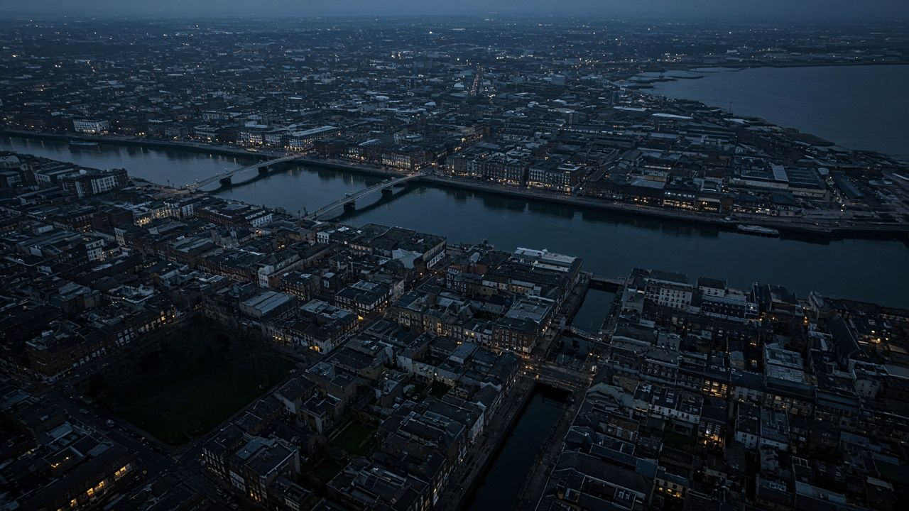
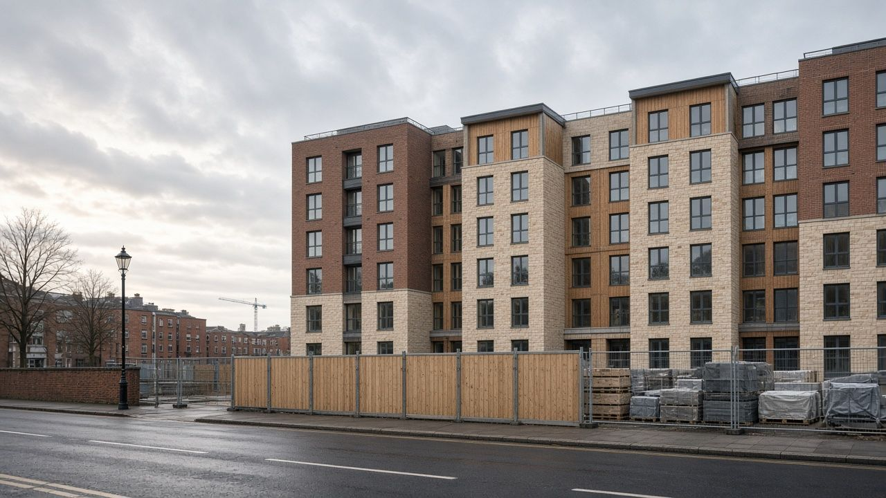
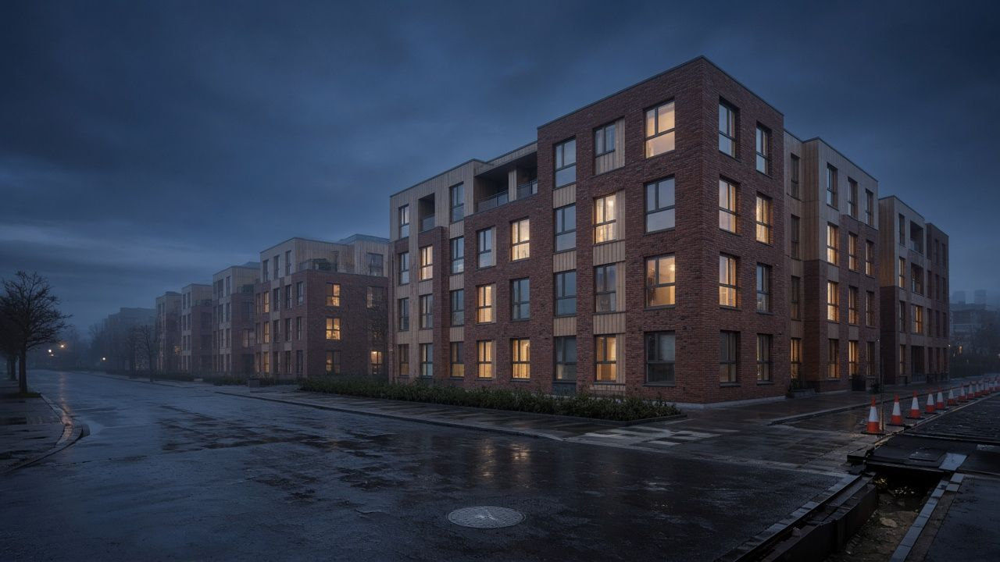
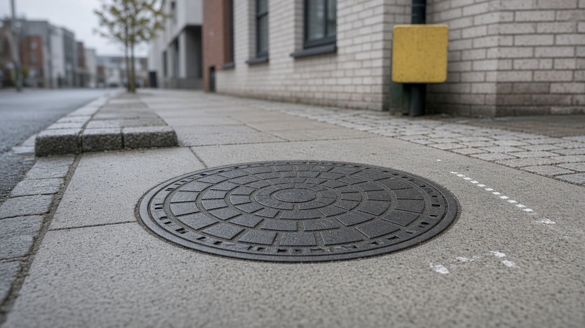
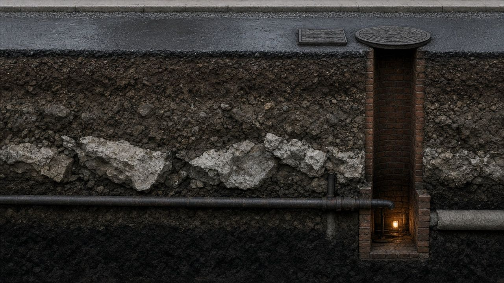
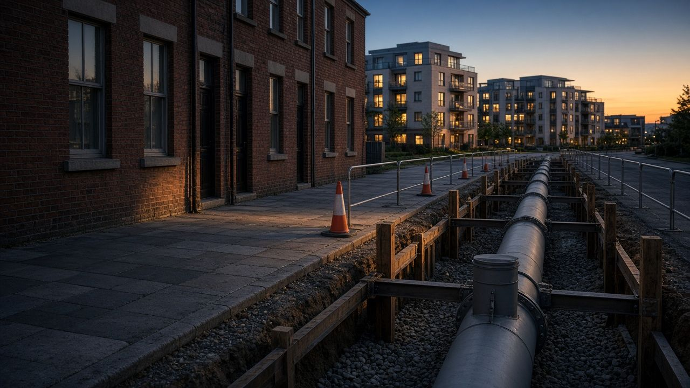

Will the pipes
cope?
Dublin is building thousands of new homes. Scroll down to see what's under them, and whether the water can reach them.
new homes with planning permission in the study area, from applications made in the last three years.
Every one of them will need a water connection.
Sample figures, until the pipeline has run.
We can't see the pipes.
Uisce Éireann's pipe records aren't public. So we read the clues the street gives away: yellow H hydrant plates, manhole covers, and buildings that already have water.
A hydrant plate even gives away the size of the main below it.
So we estimate them.
Each street gets a confidence level from the evidence along it. Strong evidence draws a solid main; weak evidence, a dashed one.
- High
- Medium
- Low
- No evidence
Then we route the new pipe.
About this much new main would reach every unserved site, taking the shortest route along existing streets.
That was one street.
Here's Dublin.
Every line is an estimated main. Every gold line is new pipe we'd need.
See every development on the map.
Pick any planned development, check its nearest estimated main, then extend the network and watch the new pipe route itself.
The network is estimated from public evidence. It is not Uisce Éireann's pipe record. Figures shown are samples until the pipeline has run.